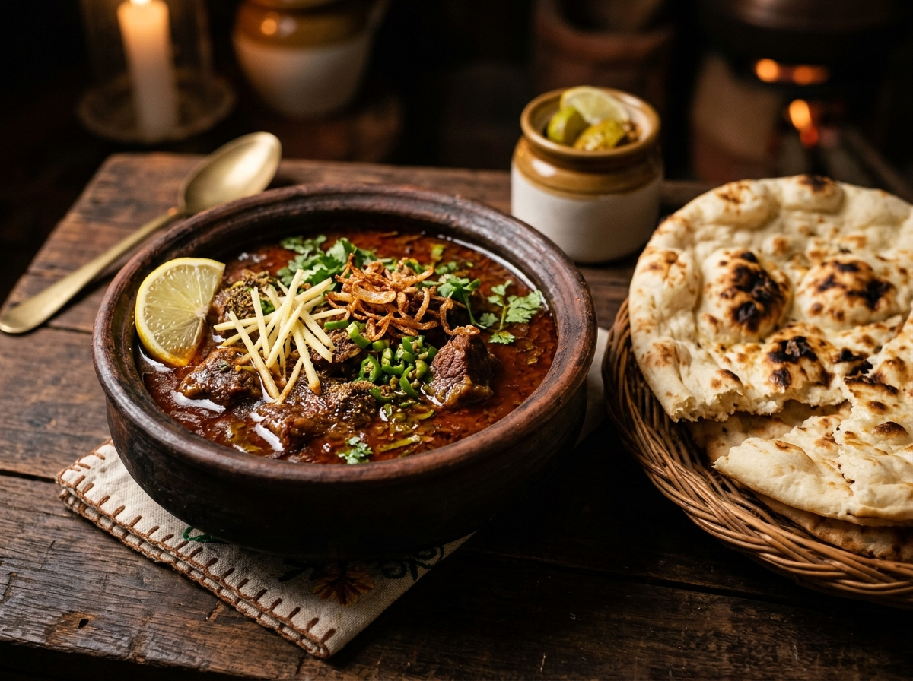

FORK & SHARE
Recipe Sharing Hub
Home
Explore
Categories
Meal Planner
Share a Recipe
Community
Profile
Seasonal Collection
Fresh inspiration for every season.
WINTER WARMERS
Comforting recipes for chilly days.
Explore Collection

Featured Recipes